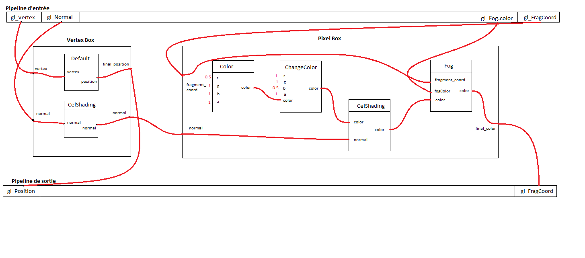
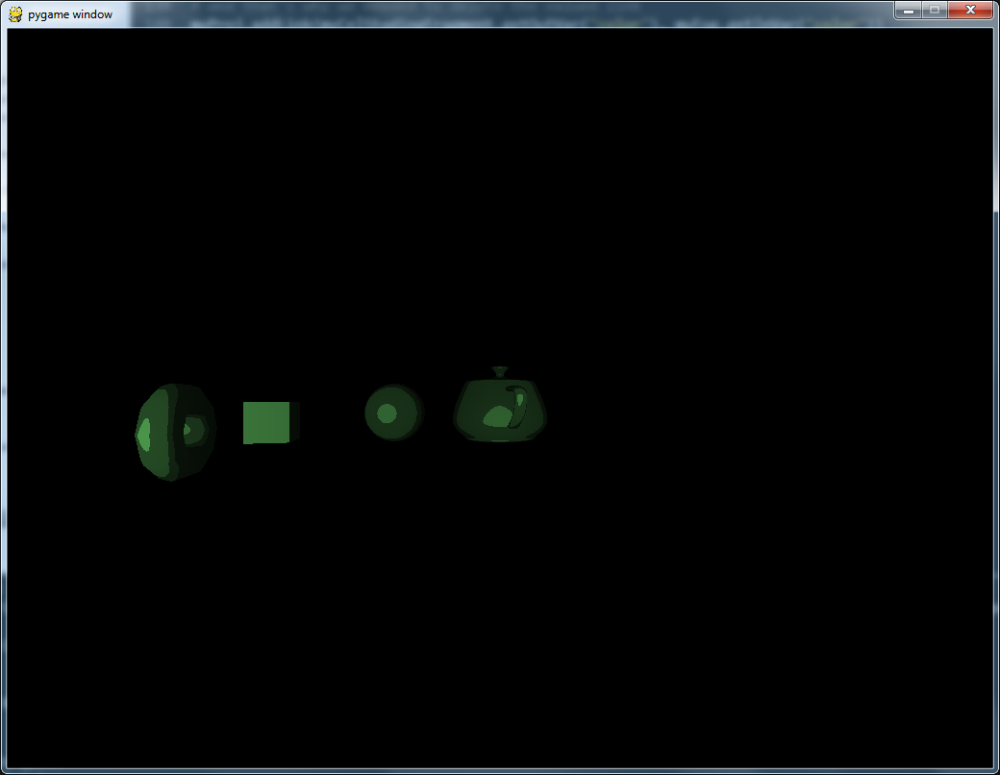

In this tutorial, you will see why you won't be able to develop shaders without using the shaderComp API. The recursivity will allows you to build more and more complex shaders by reusing shader you've already build without knowing more than the interface of this shader. It will grant you encapsulation just as you have when programming object. Take a look !
For the last part of this tutorial, we are going to reuse the fog shader you have created on the previous part to show you the way the recursivity is working. To show you again the recipe of a good ShaderComp script, we will start with the drawing of the project we are going to create:
As you can see here, we are using in our project a node called Fog, wich is not a builtin node but the pixel box of the shader we created before. Moreover, we are going to present a new builtin shader (a couple of vertex/pixel node): the CelShading. Its aim is to provide a cartoon-looking of the colors of the rendered scene. Thanks to the encapsulation of the shaders provided by the shaderComp API, you don't need to understant how this shader is working, only what is its interface. Let's move on !
Remember that, for the rendering of our fog shader, we needed to set the input color to a constant with a valued links. If you do not want to render the fog shader alone, you need to remove theses links as the shader will take this color as an input variable. Here is the complete code of the fog shader, wich is the starting point of this project and quite the same code givent at the end of the previous part:
from shaderComp.core import *
from shaderComp.shaders import *
# notice the import of the shaders of the math module
from shaderComp.shaders.math import *
# creation of the project 'myFog'
myFogProject = Project.Project('fogProject')
# creation of the nodes
# remember that the first one is mandatory in the vertex box
myDefaultVertexShader = DefaultVertexShader.DefaultVertexShader()
myDispatchVect4 = DispatchVect4.DispatchVect4(ShaderType.PIXEL_SHADER)
myFloatDiv1 = FloatDiv.FloatDiv(ShaderType.PIXEL_SHADER)
myFloatDiv2 = FloatDiv.FloatDiv(ShaderType.PIXEL_SHADER)
myLog = Log.Log(ShaderType.PIXEL_SHADER)
myClamp = Clamp.Clamp(ShaderType.PIXEL_SHADER)
myMix = Mix.Mix(ShaderType.PIXEL_SHADER)
# adding nodes to the project
myFogProject.appendNode(myDefaultVertexShader)
myFogProject.appendNode(myDispatchVect4)
myFogProject.appendNode(myFloatDiv1)
myFogProject.appendNode(myFloatDiv2)
myFogProject.appendNode(myLog)
myFogProject.appendNode(myClamp)
myFogProject.appendNode(myMix)
# setting the input variables to a constant
myFogProject.addValuedLink(myClamp.getInVar('min'), 0.0)
myFogProject.addValuedLink(myClamp.getInVar('max'), 1.0)
# creating input and output variables of the vertex box
vertexOutFinalPositionVar = myFogProject.addVertexOutVar('final_position', 'vec4')
vertexInVertVar = myFogProject.addVertexInVar('vertex', 'vec4')
# creating input and output variables of the pixel box
pixelInFragCoordVar = myFogProject.addPixelInVar('fragCoord', 'vec4')
pixelInColorVar = myFogProject.addPixelInVar('color', 'vec4')
pixelInFogFactorVar = myFogProject.addPixelInVar('fogFactor', 'float')
pixelInFogColorVar = myFogProject.addPixelInVar('fogColor', 'vec4')
pixelOutFinalColor = myFogProject.addPixelOutVar('color', 'vec4')
#creating links between the pipeline and the input of the boxes
myFogProject.addLink(myFogProject.getVertexPipelineVar('Vertex'), vertexInVertVar)
myFogProject.addLink(myFogProject.getPixelPipelineVar('FragCoord'), pixelInFragCoordVar)
myFogProject.addLink(myFogProject.getPixelPipelineVar('FogColor'), pixelInFogColorVar)
# creating links between the output of the boxes and the pipeline
myFogProject.addLink(vertexOutFinalPositionVar, myFogProject.getVertexPipelineVar('Position'))
myFogProject.addLink(pixelOutFinalColor, myFogProject.getPixelPipelineVar('FragColor'))
# creating links between input/output variables of the vertex box and the nodes it contains
myFogProject.addLink(vertexInVertVar, myDefaultVertexShader.getInVar('vertex'))
myFogProject.addLink(myDefaultVertexShader.getOutVar('position'), vertexOutFinalPositionVar)
# creating links between input/output variables of the pixel box and the nodes it contains
myFogProject.addLink(pixelInFragCoordVar, myDispatchVect4.getInVar('myVec4'))
myFogProject.addLink(myDispatchVect4.getOutVar('z'), myFloatDiv1.getInVar('dividend'))
myFogProject.addLink(myDispatchVect4.getOutVar('w'), myFloatDiv1.getInVar('divider'))
myFogProject.addLink(myFloatDiv1.getOutVar('result'), myFloatDiv2.getInVar('dividend'))
myFogProject.addLink(pixelInFogFactorVar, myFloatDiv2.getInVar('divider'))
myFogProject.addLink(myFloatDiv2.getOutVar('result'), myLog.getInVar('input'))
myFogProject.addLink(myLog.getOutVar('output'), myClamp.getInVar('value'))
myFogProject.addLink(myClamp.getOutVar('result'), myMix.getInVar('factor'))
myFogProject.addLink(pixelInColorVar, myMix.getInVar('v1'))
myFogProject.addLink(pixelInFogColorVar, myMix.getInVar('v2'))
myFogProject.addLink(myMix.getOutVar('result'), pixelOutFinalColor)
# adding valued link to the unlinked input variables of the pixel box
# the pixelInColorVar will be linked later to the output of another shader
# myFogProject.addValuedLink(pixelInColorVar, 'vec4(0.5, 0.5, 1.0, 1.0)')
myFogProject.addValuedLink(pixelInFogFactorVar, 25.0)
# computing using GLSL printer and rendering overview
# We will not compute anything for now.
#myFogProject.compute('GLSLPrinter')
#myFogProject.render()
Our fog shader is build. As said above, this is exactly the same as the shader built in the previous tutorial, only the line 71, 76 and 77 has been commented. Let's learn now how this fog shader can be used in another shader.
Yes. Thanks to the power of inheritance, you can use a box exactly the same as you use a node. That means that you can get the variables of its interface as well as adding it to another project !
But before doing anything with our fog shader, remember that we need to follow the recipe. The drawing has been done, we need to create the project and instanciate all the nodes needed:
myProj = Project.Project('tutorial_3')
myColor = Color.Color()
myChangeColor = ChangeColor.ChangeColor()
myCelShadingVertex = CelShadingVertex.CelShadingVertex()
myCelShadingFragment = CelShadingFragment.CelShadingFragment()
myDefaultVertexShader = DefaultVertexShader.DefaultVertexShader()
The fog node is the only one needed. As a box is a node, and because the fog shader has already been created before, we do not need to instanciated, we just need to get it:
myFog = myFogProject.getPixelBox()
Next steps of the recipe: add the nodes to the project (the fog node is a pixel box, is automatically detected as a pixel shader and added to the pixel box of the parent project), create the interface of the box and link all of this together. Theses steps will not be detailed here. If anything seems strange, please refer to the previous tutorial where everything has been clearly detailed.
# creating input and output variables of the vertex box
vertexOutNormalVar = myProj.addVertexOutVar('normal', 'vec3')
vertexOutFinalPositionVar = myProj.addVertexOutVar('final_position', 'vec4')
vertexInVertVar = myProj.addVertexInVar('vertex', 'vec4')
vertexInNormalVar = myProj.addVertexInVar('normal', 'vec3')
# creating input and output variables of the pixel box
pixelInNormalVar = myProj.addPixelInVar('normal', 'vec3')
pixelInFragCoordVar = myProj.addPixelInVar('fragCoord', 'vec4')
pixelOutFinalColor = myProj.addPixelOutVar('final_color', 'vec4')
# creating links between input and output variables of the boxes and the pipeline variables
myProj.addLink(myProj.getVertexPipelineVar('Vertex'), vertexInVertVar)
myProj.addLink(myProj.getVertexPipelineVar('Normal'), vertexInNormalVar)
myProj.addLink(myProj.getVertexPipelineVar('FragCoord'), pixelInFragCoordVar)
myProj.addLink(vertexOutFinalPositionVar, myProj.getVertexPipelineVar('Position'))
myProj.addLink(pixelOutFinalColor, myProj.getPixelPipelineVar('FragColor'))
# creating links between input/output variables of the vertex and the pixel box and the nodes it contains
myProj.addLink(vertexInVertVar, myDefaultVertexShader.getInVar('vertex'))
myProj.addLink(vertexInNormalVar, myCelShadingVertex.getInVar('normal'))
myProj.addLink(myDefaultVertexShader.getOutVar('position'), vertexOutFinalPositionVar)
myProj.addLink(myCelShadingVertex.getOutVar('normal'), vertexOutNormalVar)
# creating valued links (it shows you again how to do it without builtin setters functions)
myProj.addValuedLink(myColor.getInVar('r'), 0.5)
myProj.addValuedLink(myColor.getInVar('g'), 1.0)
myProj.addValuedLink(myColor.getInVar('b'), 1.0)
myProj.addValuedLink(myColor.getInVar('a'), 1.0)
myProj.addValuedLink(myChangeColor.getInVar('r'), 1.0)
myProj.addValuedLink(myChangeColor.getInVar('g'), 1.0)
myProj.addValuedLink(myChangeColor.getInVar('b'), 0.5)
myProj.addValuedLink(myChangeColor.getInVar('a'), 1.0)
# creating every other links
myProj.addLink(myColor.getOutVar('color'), myChangeColor.getInVar('color'))
myProj.addLink(pixelInNormalVar, myCelShadingFragment.getInVar('normal'))
myProj.addLink(pixelInFragCoordVar, myFog.getInVar('fragCoord'))
myProj.addLink(myChangeColor.getOutVar('color'), myCelShadingFragment.getInVar('color'))
# NOTE : that's where we link the 'color' input of the fog node and the 'color' output of the celshading node
# and that's why we needed to delete the valued link
myProj.addLink(myCelShadingFragment.getOutVar('color'), myFog.getInVar('color'))
myProj.addLink(myFog.getOutVar('color'), pixelOutFinalColor)
# creating a link between the vertex box and the pixel box
myProj.addLink(vertexOutNormalVar, pixelInNormalVar)
Last step: computing and rendering ! Here are the two last lines that you already know:
myProj.compute('GLSLPrinter')
myProj.render()
And here is the result !
The user-side of the ShaderComp tutorial is finished. If you did not miss anything up to now, you should be able to write your own implementation of the celshading shader ! Give a try !
If this sound a little too difficult for you, take a look at the code of the generator of the celshading node (shaderComp.printers.CelShadingFragment.CelShadingFragment and shaderComp.printers.CelShadingVertex.CelShadingVertex), it may be useful. And don't forget to use the recipe given at the end of the first part of the user tutorial !